Рабочее заземление
Содержание [скрыть]
Что такое защитное и рабочее заземление. Защитное и рабочее заземление
В данной статье мы постараемся объяснить, что такое рабочее и технологическоезаземление, и чем они отличаются от защитного.
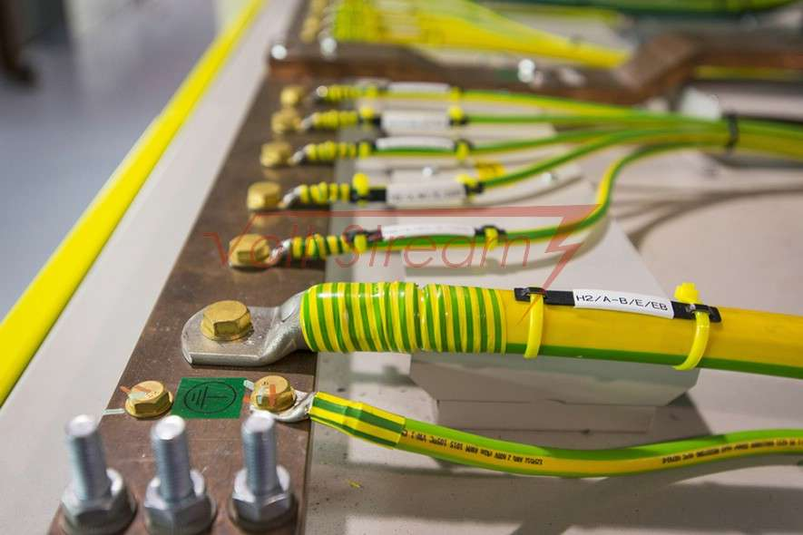
Рабочим называют заземление, предназначенное для отвода нежелательных токов, также оно является возвратным контуром фазных токов.
Технологическое заземление нельзя использовать в качестве возвратного контура, его функция — защита чувствительного оборудования. Технологическое заземление — резервный низкоомный токовый контур.
Защитное заземление используется для безопасности при аварии (короткое замыкание).
Рабочее же заземление служит исключительно для защиты силового оборудования.
Технологическое заземление служит для защиты оборудования, однако, в некоторых случаях, может также использоваться в качестве защитного.
Защитное заземление выполняют, присоединяя все металлические нетоковедущие части оборудования (элементы, по которым в нормальном рабочем состоянии не протекают электрические токи) к земле. Это могут быть корпуса, стойки, станины и т.д.
Задача защитного заземления — минимизировать риск поражения электрическим током при касании оборудования персоналом во время короткого замыкания (КЗ).
При КЗ на нетоковедущих частях оборудования может оказаться электрический потенциал большой величины (относительно земли). При касании данных частей человеком, его тело может оказаться под воздействием электрического тока.
Чтобы избежать этого все нетоковедущие части оборудования присоединяют к системе заземления. Таким образом, все аварийные токи будут отведены через заземляющее устройство в землю.
Рабочее заземление выполняют присоединяя к системе заземления токоведущие части (токопроводы, по которым в нормальном рабочем состоянии протекают электрические токи). Например, заземление нейтрали силового трансформатора со схемой соединения обмоток «звезда».
Данный вид заземления служит для защиты оборудования электрических систем и обеспечения надежного контура для возврата фазных токов от электрооборудования до источника электроэнергии.
Технологическим называют заземление, обусловленное требованиями технологического процесса. Оно может выполнять множество функций: защита оборудования, безопасность персонала, обеспечение точности измерений и т.п.
Функциональное назначение технологического заземления в каждом случае индивидуально и зависит от используемого оборудования.
Просмотров: 5353| Опубликовано: Воскресенье, 13 Март 2016 13:02|
Согласно Правилам устройства электроустановок, рабочим (или функциональным/технологическим) заземлением называется заземление точки или точек токоведущих частей электроустановки, выполняемое для обеспечения работы электроустановки, но не в целях электробезопасности.
Подразумевается, что оборудование работает надежно, а если сопротивление функционального заземления ≤4 Ом, то проблемы электробезопасности вообще исключены.
Понятие функционального заземления (далее FE) для сетей питания информационного оборудования и систем связи описано в следующих нормативных документах:
Допускается функциональный заземляющий проводник (FE-проводник) и защитный проводник (РЕ-проводник) объединять в один специальный проводник и присоединять его главной заземляющей шине (ГЗШ)».
Для правильного понимания определений, данных выше, необходимо договорится о смысле некоторых слов:
Причины распространения функционального заземления
Первая причина
В 90-х гг. с увеличением распространения вычислительной техники, мощность которой постоянно увеличивалась, возникла необходимость обеспечить ее надежную работу в сетях типа ТN-C.
На рис. 1 показана схема рабочего заземления с использованием PEN-проводника (совмещенного нулевого рабочего N и нулевого защитного PE):
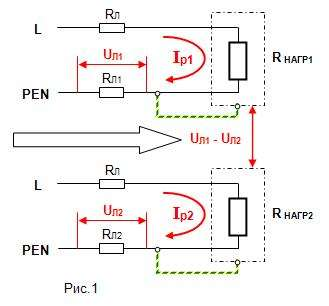
Информация передается по линии связи между 2-мя компьютерами. Возьмем за отправную точку корпусное заземление. Заземление, выполненное проводником РЕN, по которому текут рабочие токи, приводит к разнице потенциалов между корпусами приборов. Получается, что в линию связи вносится разница потенциалов, пульсации, гармоники и высокочастотные помехи при работе оборудования с большими реактивными токами.
Решением проблемы служило локальное применение отдельной системы рабочего заземления, которое обеспечивало устойчивую работу компьютеров. Стоит отметить, что стоимость перехода на «пятипроводную» систему типа TN-S была значительно выше.
Вторая причина
Распространению функционального заземления также способствовало плохое состояние защитного заземления в электроустановках. При поставках «чувствительной» электронной техники от заказчика требовалось создание отдельного заземления.
Третья причина
Возникновение специфических и строгих требований по защите информации, особых лабораторий и других аналогичных объектов также послужило распространению FE.
Основные схемы выполнения функционального заземления
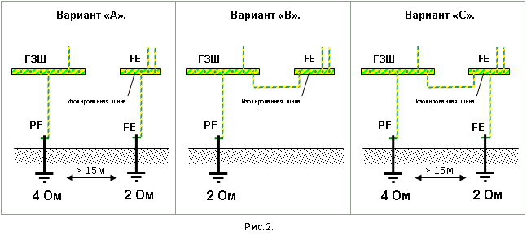
Вариант «А» существует и даже исполняется, но является самым опасным из представленных с точки зрения электробезопасности и безопасности объекта в целом. Подробные объяснения приведены ниже.
Вариант «В» является формальным подходом, выполнение системы с его использованием полностью законно. Это качественное защитное заземление с радиальной схемой разводки, которое используется для вновь строящихся объектов.
Вариант «С» – удобная схема для реконструируемых объектов. С точки зрения воздействия помех на ответственное оборудование данный вариант значительно лучше, чем «В».
Недостатки варианта «А»:
1. Разрушается целостность основной системы уравнивания потенциалов, что приводит к появлению разности потенциалов на независимых системах заземления в процессе эксплуатации.
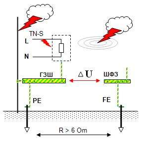
Причины появления разности потенциалов могут быть такими:
2. Крайне низкие токи короткого замыкания фаза-корпус относительно сетей типа TN-S со всеми вытекающими последствиями (см. рис. 3).
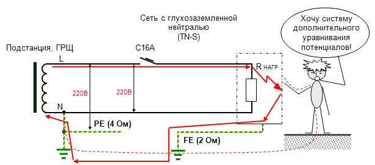
Рис. 3. Схема протекания тока замыкания на корпус аппарата при использовании независимого функционального заземления в сети типа TN
FE не имеет точки соединения с ГЗШ и с нейтралью, и токи короткого замыкания составят только десятки ампер. Ситуация ухудшается отсутствие в цепи устройства защитного отключения. Максимальный ток короткого замыкания составит 36,6 А:
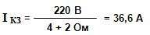
Время отключения составит 30-120 сек, и все это время на корпусе будет присутствовать практически фазное напряжение по корпусным элементам, и протекать ток большой величины, что может привести к возгоранию. При наличии автоматов с номинальным рабочим током более 32 А цепь вообще не отключится.
Повторим: вариант «А» использовать для сетей типа TN-S крайне опасно.
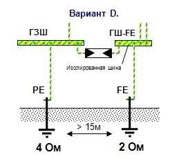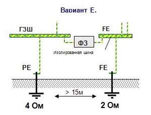
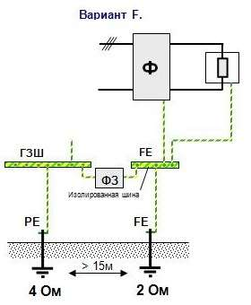 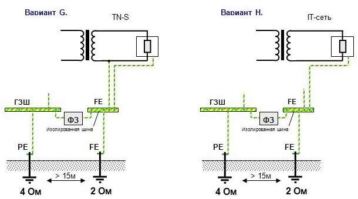
Ф – сетевой фильтр, ФЗ – фильтр заземления.
Вариант «D» демонстрирует соединение FE и ГЗШ с использованием разрядника уравнивания потенциалов. Вариант имеет проблему: он сработает только в случае заноса потенциала при грозовых разрядах, когда разница в напряжении достаточна для срабатывания разрядника (600-900В). В остальных случаях целостность системы основного уравнивания потенциалов электроустановки остается нарушенной и электробезопасности при первичном пробое не обеспечивается.
Вариант «Е» разработан с учетом установки в разрыв проводника уравнивания потенциалов дроссельного фильтра заземления (например, «Квазар Ф-ХХХРЕ», изготовитель ГК «Полигон»).
Варианты «F», «G», «H» показывают построение FE с постепенным улучшением уровня защиты ответственного электрооборудования от помех без проблем с электробезопасностью.
Функциональное заземление в лечебно-профилактических учреждениях
Функциональное заземление относительно ЛПУ осуществляется для обеспечения нормальной стабильной работы высокочувствительной электроаппаратуры при питании от разделительного трансформатора или согласно техническим требованиям на некоторые виды оборудования.
В циркуляре №24/2009 написано, что при отсутствии особых требований изготовителей аппаратуры общее сопротивление растеканию тока заземляющего устройства не должно превышать 2 Ом.
Требование подключения к главной заземляющей шине: «…Устройство независимых заземлителей для защитного и/или функционального заземления медицинского оборудования, не подключенных к ГЗШ, в зданиях с медицинскими помещениями не допускается…».
Взаимное влияние разных систем заземления отдельных помещений при наличии связи через сторонние проводящие части
В качестве примера рассмотрим следующую ситуацию:
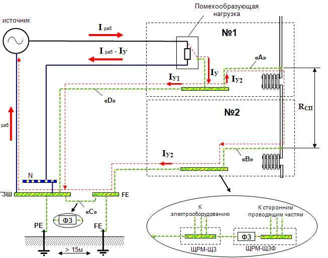
Есть 2 помещения с электрооборудованием, в каждом установлена дополнительная система уравнивания потенциалов. Помещение номер №1 подключено к системе защитного заземления (РЕ) и имеет помехообразующую нагрузку. В помещении №2 есть ответственное электрооборудование и организовано подключение к системе FE.
На рисунке видно, что между двумя системами заземления за счет сторонних проводящих частей (в данном случае система отопления) образуется «паразитная» связь с сопротивлением RСП.
В итоге по FE-проводникам протекает часть тока утечки IУ2.
Вычислить величину этого тока достаточно сложно. С одной стороны, FE-проводники из медного провода с хорошей проводимостью и небольшим сопротивлением. С другой стороны, водопроводные трубы и прочие сторонние проводящие части в сумме могут обладать значительным сечением, что компенсирует плохую проводимость железа. Поэтому IУ2 = 0,5*IУ допустимое реальное соотношение.
Избавиться хотя бы от одного проводника «А», «В» или «С» невозможно по причине безопасности объекта и электробезопасности персонала.
Как вариант, можно сильно увеличить сечение проводника «D», что пропорционально уменьшит ток утечки IУ2. Но, как вы понимаете, это повлечет значительные затраты.
Домашний уют
Рабочее заземление: определение, устройство и назначение
5 октября 2017
Заземление электроустановок делится на два основных вида – функциональное рабочее и защитное. В некоторых источниках встречаются и дополнительные виды заземлений, такие как измерительное, контрольное, инструментальное и радио.
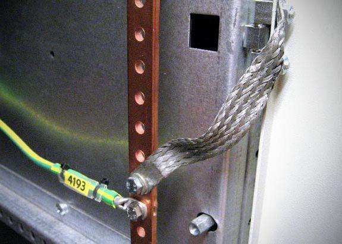
Рабочее или функциональное заземление
В разделе ПУЭ в параграфе № 1.7.30 дано определение рабочего заземления: «рабочим называют заземление одной или нескольких точек токоведущих частей электроустановки, которое служит не в целях безопасности».
Такое заземление подразумевает электрический контакт с грунтом. Оно необходимо для нормальной эксплуатации электроустановки в штатном режиме.
Назначение функционального заземления
Для того чтобы понять, что называется рабочим заземлением, следует знать его основное назначение – устранение опасности удара током в случае соприкосновения человека к корпусу электроустановки или к её токоведущим частям, которые в данный момент находятся под напряжением.
Такая защита применяется в сетях с трёхфазной системой распределения тока. Изолированная нейтраль необходима для электросети, где напряжение не превышает 1 кВ. В сетях с напряжением свыше 1 кВ защитное заземление допускается делать с любым режимом нейтрали.
Как работает защитное (функциональное) заземление
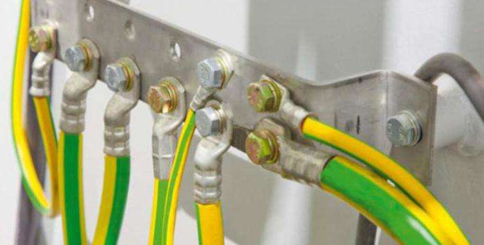
Принцип действия функционального заземления заключается в снижении напряжения между корпусом, который в результате непредвиденной аварии оказался под током, и землёй до безопасной для человека величины.
Если корпус электроустановки, оказавшийся под током, не оснащён функциональным заземлением, то прикосновение человека к нему равносильно контакта с фазным проводом.
Если учесть, что сопротивление обуви человека, который дотронулся до электроустановки, и пола, на котором он стоит, ничтожно мала относительно земли, то ток может достигнуть опасной величины.
При правильной работы функционального заземления ток, проходящий через человека, будет безопасным. Напряжение во время прикосновения также будет незначительным. Основная часть электроэнергии будет уходить через заземляющий проводник в землю.
Различия между рабочим и защитным заземлениями
Рабочее и защитное заземление отличается друг от друга прежде всего назначением. Если первое необходимо для обеспечения правильной и бесперебойной работы электрооборудования, то второе служит для защиты людей от поражения электрическим током.
Также оно защищает и оборудование от поломок в случае пробоя какого-нибудь электрического прибора на корпус. Если здание оборудовано громоотводом, такой тип заземления защитит приборы от перегрузки в случае удара молнии.
Рабочее заземление электроустановок, в случае возникновения чрезвычайной ситуации, сыграет роль защитного, но основная её функция — обеспечение правильной бесперебойной работы электрооборудования.
В неизменном виде функциональное заземление применяют только на промышленных объектах. В жилых домах используется заземляющий проводник, который подводится к розетке. Однако есть бытовые приборы в доме, которые таят в себе потенциальную опасность для потребителя, поэтому не будет лишним заземлить их, используя глухозаземлённую нейтраль.
Домашние приборы, которые требуется подключить к рабочему заземлению:
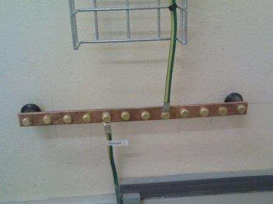
Рабочее заземление представляет собой вбитые в землю железные штыри, играющие роль проводников, на глубину около 2-3 метров.
Такие металлические прутья соединяют заземлительные клеммы электрооборудования с шиной заземления, тем самым образуя металлосвязь.
Металлосвязь есть в каждом жилом доме. Это сварная железная конструкция, которая соединяет друг с другом верхние концы заземлителей. Её заводят к вводному щитку дома для дальнейшей разводки по квартирам.
В качестве заземляющего проводника используют шину или провод с сечением не менее 4 кв. мм, окрашенные в жёлтые и зелёные полосы. Кабель в основном используют для переноса функционального заземления от шины к шине.
В целях безопасности проводится периодическая проверка электронного сопротивления металлической связи заземления. Оно измеряется от клеммы заземления электроустановки до наиболее удалённого от неё наземного контура заземления. Показатель сопротивления в любой части рабочего заземления не должен превышать 0,1 Ом.
Для чего делают несколько заземлителей
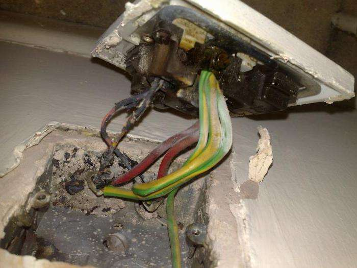
Электроустановку нельзя оснащать только одним заземлителем, поскольку почва является нелинейным проводником. Сопротивление земли находится в сильной зависимости от напряжения и площади контакта с воткнутыми штырями рабочего заземления. У одного заземлителя площадь контакта с почвой будет недостаточной, чтобы обеспечить бесперебойную работу электроустановки. Если установить 2 заземлителя на расстоянии в несколько метров друг от друга, то появляется достаточная площадь контакта с землёй. Однако следует помнить, что разносить слишком далеко металлические части заземления нельзя, поскольку связь между ними прервётся. В итоге останется только два отдельно установленных в почву заземлителя, никак не связанных друг с другом. Оптимальное расстояние между двумя контурами заземления составляет 1-2 метра.
Как нельзя осуществлять заземление
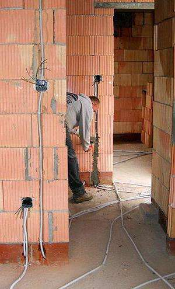
Согласно параграфу 1.7.110 ПУЭ, запрещается использовать в качестве рабочего заземления любые виды трубопроводов. Кроме того, запрещено выводить заземляющий кабель наружу и подключать его к неподготовленной контактной площадке на шине. Такой запрет объясняется тем, что каждый металл имеет свой индивидуальный потенциал. При воздействии внешних факторов образуется гальванический пар, который способствует процессу электроэрозии. Коррозия может распространиться под оболочку заземляющего провода, что повышает опасность его оплавления во время подачи больших токов на контур заземления в случае аварии. Специальная защитная смазка предотвращает разрушение металла, но действует она лишь в сухом помещении.
Также ПУЭ запрещает осуществлять поочерёдное заземление электроустановок друг с другом, подключать более одного кабеля на одну площадку заземляющей шины. Если пренебречь такими правилами, то в случае аварии на одной установке она будет создавать помехи в работе соседа. Такое явление называется электрической несопоставимостью. При неправильном подключении рабочего заземления работы по устранению недостатков опасны для жизни.
Требования к заземляющим конструкциям
Чтобы разобраться в том, что называется рабочим заземлением, а также какие требования предъявляются к таким конструкциям, следует знать, что для защиты людей от удара электрическим током, напряжение которого не превышает 1000 В, необходимо заземлять абсолютно все металлические части электрооборудования.
Немаловажно, чтобы все конструкции, построенные в целях заземления, отвечали всем нормам безопасности, предъявляемым для обеспечения нормальной работоспособности сетей и дополнительных предохранителей от возможной перегрузки.
Опасность соприкосновения с токоведущими частями
При контакте человека с токоведущими частями электрической цепи или с металлическими конструкциями, которые оказались под напряжением в результате нарушения изоляционного слоя кабеля, возможно поражение электрическим током. Полученная травма проявляется в виде ожога на кожном покрове. От такого удара человек может потерять сознание, возможна остановка дыхания и сердца. Встречаются случаи, когда удар тока при малом напряжении приводит к смерти человека.
Меры предосторожности от поражения током
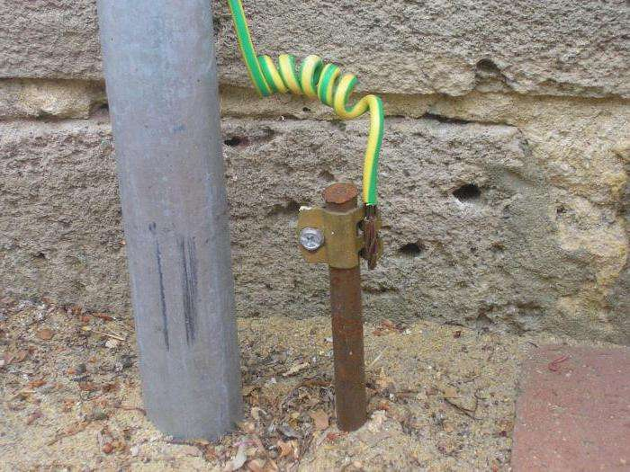
Чтобы максимально обезопасить людей от контакта с токоведущими частями электроустановки, а также с её металлическими частями, необходимо полностью изолировать опасный объект. Для этого устанавливают различные ограждения вокруг электроустановок.